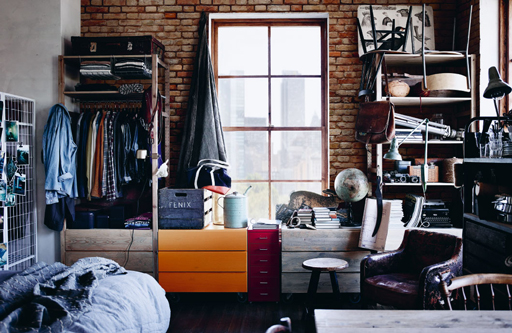
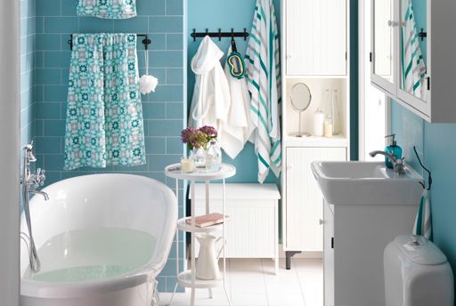
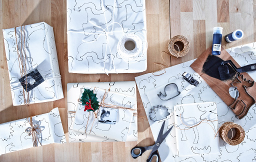
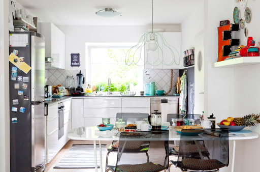
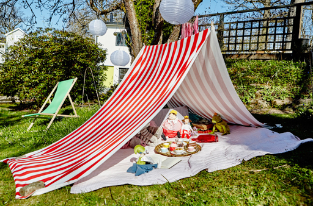
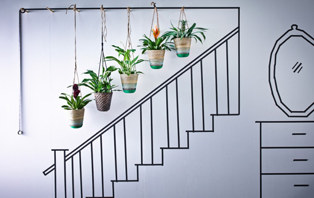

宜家创意灵感
我们不相信会有完美无缺的家，但是我们相信家能够完美彰显房子主人的风格特点。在家里，一切风格和功能都能按照你的喜好和需求设计，而且无需花费太多，即可为你带来舒适的感觉。这就是我们在本章介绍各种家居创意的原因所在，从家居装饰创意到收纳技巧，再到让你的家充满更多绿色的灵感，一应俱全。有了这些创意和灵感，就可以打造出一方你喜欢称其为家的空间。
-
打造适合24小时使用的房间
居住空间紧张？整家人只有一间房？让我们为你排忧解难吧。在宜家《家居指南》中，我们用花卉印花和色调明亮的布料打造了一间集休闲、工作、用餐和睡觉于一体的样板间，十分适合居住空间紧张的小家庭。我们将其叫做“24小时房间”。这个房间如何发挥作用？这不是什么秘密，来看看吧。
-
欢迎来到世界上，小宝宝！
第一个宝宝就要出生了？宝宝出生之前我们就知道，以后的日子会让人难以招架。哄宝宝睡觉，给他喂食、换衣、洗澡，逗他开心将会成为你的日常。我们提供一些基本指南，能帮助你镇定地迎接第一个宝宝的到来。
-
谈谈翻新
现今我们越来越重视环保的生活方式。我们不像以前一样经常买，买，买，而是最大化利用家中的现有物品。下面就来看看我们如何给宜家产品赋予新生命（你也可以尝试着改造家中现有的类似物品）。
-
终极梳妆台（少女版）
基本上没有人喜欢手忙脚乱的清晨时光。尤其是你还在和父母共用一间浴室时。还有家里的兄弟姐妹。不，大家都不喜欢这样。对此我们有一些建议，帮你稍微调整下自己的晨间例行流程。我们甚至还让对此抗议最为激烈的人群（少女们）表达了自己的想法。
-
整理艺术：你的衣柜
想要整理衣柜却又不知何从下手？看看我们的专家Therese在创意实验室拍摄的便捷整理技巧视频吧。现在腾出点时间收拾，之后就无需为四处寻找而浪费时间、头疼不已了。
-
如何设计自己的工作空间
当工作给你的感觉不那么像……工作时，这难道不是一件奇妙的事吗？尤其当你在家工作时。毕竟，家，是我们摆脱压力和烦恼、感觉最舒适的地方。以下三种工作空间设计方案，能给你带来些灵感。
-
如何策划一场轻松无忧的晚餐派对
举办晚餐派对是一件充满乐趣的事情，同时也是一件让人颇有压力的差事，相信每一个期望在派对上呈现10种不同口味的蛋奶酥的举办者对此都深有体会。以下是我们的晚餐派对策划指南，有了它，你就能专注于和来客聊天，而不是担心食物能不能准时烤好上桌了。
-
动手做图章吧!
没错，孩子们都不大喜欢蔬菜，但试过这个创意以后，他们或许会对蔬菜有所改观。在我们的编辑Linda的小家庭成员的帮助下，我们在创意实验室里测验了一些适合父母和孩子们一起动手的手工活动。这个测验与蔬菜和颜料有关。快来看看！
-
打造出色的墙面展示的5种方法
墙面看起来光秃秃的？或许你可以通过墙面展示，为它们注入活力。我们采用几种个性的色彩和一些技巧，打造了一些充满创意的展示来装饰创意实验室，希望藉此为瑞典的冬日带来几抹亮丽的色彩。快来看看吧！
-
巧妙改造：GRUNDTAL 格兰代 卫生纸卷架
在所有的改造装饰创意里，卫生纸卷架应该是比较怪异的一种素材了。但是我们热衷于迎接挑战。而且我们不得不承认，改造的结果让人印象深刻！
-
简洁的冬日桌面布置
从户外获取灵感，寻找材料！——打造应季桌面布置。挪威的Gina邀请我们到家里品尝她特别烹制的冬日炖菜，她从大自然中汲取灵感打造出了别致的桌面装饰。
-
自制鳄梨酱派对美食
住在巴黎的建筑师Florian邀请朋友们到家里聚会时，喜欢准备一些美味诱人（而且简单易做）的鳄梨酱杯作为小吃。“我们的朋友是伦敦一家顶级酒店主厨，所以每年的除夕派对上，我都会按照他的建议准备一些美味的小吃！”把美味的橄榄、羊乳酪和番茄装在碗里，供客人们享用。
-
使用黑板墙的9种方法
在平滑的墙面区域刷上黑板颜料，这种有趣的装饰方法可为你的家增添几分创意。在全球各地的房主们贡献的黑板创意中，我们选择了最钟爱的几种，希望你能从中汲取灵感，打造自己的黑板墙！
-
改变你的储物方式——下面是我们的建议
开始储物时，你会发现这是件很简单的事情：你的物品外加外一个存放地方即可。在创意实验室里，我们希望稍微拓展一下这个定义，为大家展现储物方案不仅仅可以功能实用，还能根据你的个性提升房间风格。
-
举办派对的4种方法
即将在家举办一场派对，正在寻找方法让客人畅快交谈、乐享其中，最重要的是避免他们整晚干坐在沙发上的尴尬场景？我们有办法！我们在创意实验室里尝试了几种不同的方法，能够打破僵局，帮你以正确的方式开始一场派对。进来加入大家吧！
-
3个超级简单的节日季窗户装饰方法
节日近在眼前。一个本来应该趣味无穷的季节，却又让你倍感压力。下面看看我们如何打造出温暖的节日氛围，还不用花太多钱和精力。花边布料
-
享受秋日阳光
喜欢享受秋日阳光，却厌烦邻居家的噪音？我们的设计师Jenny想了一个巧妙的办法，让你在沐浴阳光的同时不受打扰，也无需挂窗帘。量好尺寸，做一个适合窗户下半部分用的木质框架，然后量出轻盈的花边布料，并把框架钉上去。接下来，只需把布料框架固定上去就大功告成了。享受秋日时光吧！
-
为自己打造一个窗座
这个单间公寓充满斯德哥尔摩风情，在窗台上铺一块柔软的羊毛地毯，再加上钟爱的靠垫，就将其改造成额外的座椅，这样房主Nor就拥有了一个舒适的空间在早晨整理思绪。“每天清晨7：10，我都会在这儿坐会儿。我会煮上咖啡，倒在一个大杯里，准时看日出。”#小物件
-
好创意帮你打造漂亮整洁的厨房
博主Mona的厨房展现了她的两大爱好——烘焙和整理。她利用开放式和封闭式储物装置、一个多功能厨房推车、自制小物件和标签，打造了一个既舒适实用又能激发灵感的烹饪空间。
-
用基本必需品建造的居所
建筑师Jerzy和医生Anna买新房子的时候，让开发商不要建成成品，留下改造空间。开放式布局、原材料和多人空间是打造梦想居所的必要元素。
-
卧室和工作区的创意组合
欧洲有近一半的年轻人都住在父母家。时装设计毕业生Liberty巧妙地改造了妈妈公寓里的卧室，使其同时可以用作创意工作区。“我的工作区就是书桌。”她说，“我用妈妈的旧机器做针织品，我还有一面灵感墙。但是我发现让房间保持井井有条，能帮助我集中注意力。”
-
美观地展示物件的方法
被自己心爱之物包围的感觉很美好，做起来也很简单。“我喜欢将工业材料与自然色彩和物品混搭。我会试着把物品放在不同地方，直到找到完美的搭配点。”室内设计师Daniella Witte如是说，她邀请我们参观她在马尔默的家。我们还从其他房主身上汲取了很多灵感，他们的展示方法都很棒。
-
充分利用空间：单面墙厨房
你的厨房很小。小到只有一面空墙。不要担心，我们帮你利用起这面墙！有很多利用墙面空间的办法，我们下面就讲三个很棒的方法。有了一些真正好的创意，任何小空间都能发挥大空间的作用。
-
如何让顶层厨房搁板展示方案更显时尚
有时，微小的细节最能彰显厨房的个性。在拍摄秋季烹饪活动创意时，我们发现自己的目光不断被背景中有趣的厨房搁板展示方案所吸引。我们非常喜欢这个设计，就问了设计师Emma是如何做到的。
-

彰显你的个性！充满创意的定制
赋予旧家具新的生命，让新家具更显出众。在组装 MASKROS 马克鲁斯 吊灯用作装饰品之前，把吊灯的每个部件都喷上颜料。“这项工作花费了我儿子Orlando大量的时间，但是我个人非常喜欢这件作品！”Berni
-
装饰桌子的两种简单方法
我们在荷兰拜访Marloes时，她利用自家栽种的香草、苹果及装苹果的纸袋打造了秋季桌面饰品！这不禁让我们想到，利用闲置在家的物品打造独具个性的装饰品，其实是一件简单而又快乐的事情。何不尝试一下呢！#小物件
-

孩子的DIY早餐：我自己做的早餐！
Jerzy和Anna鼓励他们四岁的女儿Helena独立使用厨房。“她特别喜欢用温牛奶制作她的专属玉米片。”Anna说道，“现在我们几乎每天都能看到这个场景。对我们全家人来说，以这种方式开启清晨生活非常有趣。”
-
与日常生活紧密联系的开放式厨房
“我非常喜欢这个地方。”来自建筑专业的学生Marloes说道，“我希望有一个祥和、友好而又亲切的居所，这个地方恰好就是！”在狭小的公寓里营造出这样的氛围并不容易，但是Marloes选用开放式衣柜系列作为房间隔板和家庭办公室，让厨房和生活区域连在一起，从而打造出一个多功能的空间。“当然，它的空间很狭小，但这正是我们想要的！”
-
如何打造一处应时而变的二合一用餐空间
如果你的观察力足够敏锐，就应该已经在今年的《家居指南》上注意到这款家庭版晚餐俱乐部风格的餐厅设计（如果你还没有注意到，请在此处查看，我们同时还为你准备了一段有趣的视频）。不过，有一点无法通过肉眼发觉，那就是派对结束后，整个解决方案还能折叠收放起来。来仔细看看这一切是如何实现的吧。
-
三种充分利用沙发背后的空间的方法
你的沙发背后是什么样的？对于大多数人来说，它就是一面墙，或是观看恐怖片时因害怕而躲起来的地方，这虽然也是一种用处，但我们不禁开始思考，如何通过不同的方式让这个空间更加实用一些，而这一点可以通过设置大量的储物空间及不同“区域”（用宜家的话来说）加以实现。在今年的《家居指南》里，我们列出了下面几种适合客厅空间的分区方式。
-
快速打造一个悬挂艺术展览
不需要花费太多时间，就能为你的收藏品策划一个展览，在这个示例中，我们使用了一包 HEMSMAK 汉马克 塑料袋和一些强力胶带。在上面放上照片、鲜花或你喜欢的任何东西。
-
六种透过储物空间讲故事的方法
我们在浏览最新版《IKEA 找到它！》时，对展示设计师Hans Blomquist位于巴黎的家这一章情有独钟。他别出心裁，让储物空间发挥重要作用，以打造别致的家居外观和风格，对此我们深受启发。我们觉得下面几个解决方案非常不错，快来看看它们是如何实施的吧。
-
我的空间，你的空间，我们共有的空间
你很喜欢你的室友，但是你真的很爱惜自己昂贵的洗面奶。当你和别人共享一个空间时，沟通“请不要碰我的东西”这样的意思，可能会成为一个敏感话题（尤其在有些东西原本就应该由大家共用时）。室内设计师Jenny是这样解决这个问题的，当然，她采用了一种很时髦的方式。
-

如何安全存放你的夏季衣物
夏天的结束，意味着我们又到了脱下凉鞋和太阳帽、换上围巾和针织衫的时候了。但在取出加热器之前，请先看看下面关于如何储存夏季衣物的建议，以便明年夏天来到时，所有衣物都能方便取出，直接穿着。
-
二合一两用餐桌改造技巧
喜欢娱乐，但是你家的空间又有点小？那么这个两用餐桌组合可能会帮到你。通过利用墙、两种不同类型座椅和一张餐桌，就可以在同一空间打造一个正式的娱乐空间和一个随性的休息、吃饭场所。来看看如何打造吧。
-
打造优雅卧室凉篷的两种方法
今年的《家居指南》中，这个梦幻搭配中的卧室凉篷线条流畅，浪漫无比，虽稍显华丽，但不失古典优雅。在此我们将为大家介绍几个改造家装外观的方法（提示！其中有一个是午后休闲版）。
-
隐藏电视的四种方法
电视可能在客厅中央，但是它不必成为焦点（至少不必在任何时候都是焦点）。我们从今年的《家居指南》拍摄的图片中选取了一个客厅样板间，对其做了一点修改，想出了一些方法使电视融入背景，并起到很好的装饰效果。
-
打造高处储物空间的四种方法
如果你正在寻找储物空间，却又找不到，那么你就可以考虑利用房间中通常用不到的地方。比如高至屋顶的地方。我们拿出梯子和踏脚凳，找到4个在天花板旁增加储物空间的方法。
-
查看我们的梦幻沙发
你看到新款 SINNERLIG 希利 系列了吗？最近对这款沙发的宣传力度很大，我们对此也很激动。我们最近接触了该系列的沙发，也拍了一些创意团队的照片，看看可以如何充分发挥它的作用。
-
五大便捷工作日晚餐创意
还在为工作日的食谱发愁？或许这些易于烹制和搭配的膳食创意可以帮你走出困境。我们围绕一道菜用最少的烹饪步骤搭配了5种选择。只要你有时间，就尽可能多地添加一些小菜，务必让家人也参与到制作过程中。
-
发挥创意，编织一个吊椅装饰件。
你是否正在全神贯注于编织活动？我们觉得要用自己的创意追赶今年最大的潮流，做一个最具工艺感的吊椅装饰件（如果你是编织新手，这是不错的入门选择）。查看我们的设计师Jenny的分步指南，开始学着编织吧。
-
终极重返校园时光厨房
有时候，让家庭成员重返校园的日常安排比普通日常安排本身更难。说真的，是时候该你休息一下了。孩子可以帮助你，他们甚至可能喜欢这样。创造专属孩子的领地，让他们准备自己的饮食，这不仅给了他们责任感，也让他们学会了自给自足。这样你就可以从中脱身了（暂时）。
-
5种办法帮你打造诗意宿舍
如果所处的空间太过乏味，你就很难变得充满激情。所以是时候把你的房间提升一个档次了，创造一个让你想一直呆下去的氛围。这些装饰创意可能不会让你在深夜的学习变得简单，但绝对会让你所处的空间更充满灵感。相信我们，这肯定能实现。
-
请挑选一顿每餐，不论种类如何
在工作时，在帮助孩子完成家庭作业时，或者在希望适应无事可做的闲暇时刻，你可以借此机会为晚餐作计划。肯定有更简单的方式。算了，我们都说了不用管太多，顺其自然吧。现在就告诉你怎么做。
-
我的、你的、我们的
在今年的产品手册中，这个储物创意十分吸引眼球。通过把单个的VALJE 瓦里 储物盒组合起来，变成一个简单实用的壁式储物装置。我们认为这十分适合室友们一起使用，对共享一个房间的孩子们来说也是不错的选择。使用不同色彩的盒子便于区分搁板的主人。盒子顶部可用来放置你们共享的物品。
-
卧室布置，迎合爱动手儿童的风格
偷瞄一眼你的儿童房（如果你敢的话！）。大房间里可能总有一些小东西，甚至是很多杂七杂八的物品。这就是在2015产品手册里这间房间的灵感来源。这是专们为孩子设计的，让他们发挥创意亲自动手建造和组织。并且让他们能够在完成之后摆放好，储存起来（或者进行展示！）。
-
撕碎宜家产品手册的5种方法（我们不介意！）
由于全新产品手册即将上架，因此我们请教了室内设计师如何再利用老产品手册。这是由Nathalie和Stella设计的。
-
属于秋季的阳台
你的阳台很小，但这并不意味着你没法从中获得享受。还有，不要仅仅因为室外稍微有点冷就整天把自己闷在房间里。为了向你展示我们的想法，我们请室内设计师Anna就如何设计一个属于秋天的阳台给出了她的建议。
-
快速DIY：花漾花瓶套
想要做手工？发挥自己的DIY能力和创造力吧！现在最关键的是花卉图案，因此要把自制的花瓶套对折。
-
用最简单的方法装饰你的窗户
当我们在翻新客厅Hammarlin的家的时候，我们的室内设计师设计了这些窗帘，以便让大量光线进入。这些窗帘既美观且通风性良好，但最大的优点在于它们简单易做。我的意思是，哪怕是我们最不擅长缝纫的作者（就是你面前的这位）也能做出这些窗帘。让我们一起来看看制作步骤，以及基础款外的三种花样款，只需要多费一点点功夫。 制作窗帘从未如此简单。
-
打造一个窗座的4种方法
你的新家也许没有花园和阳台，但是(#winning)一定有窗户。而且风景很不错。所以为什么不充分利用它，增加一个座位用来观赏风景和思考呢？我们去了宜家实验室看看有什么配置适合我们，以下是值得你一试的四个绝妙想法，从最简单的开始：一张带座垫的长凳和一些舒服的靠垫。
-

灵感有些不够用吗？
我们有时也会如此！为了弥补这一点，于是我们投入到关于服饰和鞋子存储的初版《找到它！》系列书籍的编写中。我们很喜欢将城市公寓设为背景的这一章节，但是本书中还有更多绝妙的创意和漂亮的室内设计，所以如果你有机会，一定要看看。
-
通过涂料让你的家具焕然一新
我们都有一些看腻了的家具。通常我们会通过给它们上漆、拆分或者装饰的方式对它们进行改造。但如果我们换一个角度呢？Hej Regina的博主Agnes Hammar帮助我们解决了这一难题。在实验室里，她向我们展示，我们并不一定要翻新我们厌倦的那件家具——而是只需要改造家具周围的环境。
-
来看看我们最喜欢的卧室内部
近几年，我们在宜家建造并拍摄了许多卧室。我们的团队一起深入研究了大量的创意卧室照片，从中挑选出我们最喜欢的设计。一起来看看我们选出的上品。
-
增加幸福感的3种方法
愿望总是美好的，但知道某个东西很好并不意味着能很容易实现它。为了养成积极的生活习惯，记者Helen Bazuaye从博客“禅宗美习（Zen Habits）”的作者Leo Babauta处获得了不少灵感：“养成良好生活习惯的关键是每天有个好的开始。”以下是如何开启美好一天的秘诀！
-
3位屋主与我们分享各自的夏日餐桌造型
无论你的室内装饰风格是怎样的，不管你想在室内或户外用餐，是与家人吃饭或是招待客人，那些带有你个人风格的小细节正是让餐桌充满生机的关键。3位热爱打造个性化空间的屋主为我们提供了不少灵感。
-
双倍的玩耍、睡觉和成长空间
富有想象力的设计、巧妙的布局加上多功能家具，即使再小的共用卧室也能变成孩子们的游戏乐园。设计师Same Grigg向一个家庭证明，共用卧室并不意味着麻烦加倍，也可能意味着双倍欢乐！
-
自己动手，一步步收获梦想小屋
在Hester搬进这座英国海边的房子后，周边的色彩和沙滩上的氛围自然而然也进入了这个家。“有时候，你的家会自己选择一种风格！”
-

五种简易的聚会小礼品
做一个“面面俱到的女主人”并非易事。而聚会小礼品也只是需要考虑在内的事。不过这五种小礼品创意既表达了“感谢光临”，又不用费钱费力。
-
用三节课学习挑选（你喜欢的）油漆颜色
选择一种油漆颜色。这并不容易。我们清楚这一点。你也清楚这一点。简单地将这个指南拼在一起是几乎不可能做到的。不过虽然颜色选择是个人的事，但是在选择油漆颜色时需要记住一些要点。这里是一些小贴士，可以帮你减少在油漆店的挑选时间，也能减少在墙上刷错油漆的情况。
-
循环使用、减少使用、废物利用：7种方式让你度过更加可持续的夏天
选择可持续生活方式就像是一种新年志愿。你放弃一些东西，可能是因为它不是100％对你有益（比如巧克力）。几个月之后，你又回到了之前的状态。甚至有过之而无不及。我们认为成功的秘诀就是做出微小却又切实可行的改变（比如减少巧克力摄入量），并且提醒自己每一点的努力都是有帮助的。这里有七种小方法，可以让你在这个夏天过上更加可持续并且更加简单的生活。不需要任何牺牲。
-
安装挂钩和挂杆的门厅
夏天（差不多）已经来了，我们正要将所有厚重的冬装外套和夹克都收起来，我们情不自禁地想要一个智能门厅，可以轻松地帮我们完成冬夏之间的转换。因此，我们来到宜家实验室开始进行测试，最终的确定方案是：设计一个装满挂钩和挂杆的门厅。
-
即使休息的时间不同步，也能陪在彼此身边
本创意适合以下人士：关着灯穿衣服时经常前后穿反；踮着脚走进黑暗的卧室时，脚指头撞上床腿。或是周一至周五只有睡觉的时候才能在一起。不要让不同的工作时间安排支配你的家庭生活。让“我”和“我们”能够共享舒适的卧室。
-
使用 VARIERA 瓦瑞拉 的四种全新方法。
猜猜是什么？它不再仅仅是一个便利的塑料袋容器
-
用相框装饰墙壁
看着亲切的面孔、童年回忆和家人美妙的瞬间，比看光秃秃的墙壁好多了。当组合Hammarlin 一家的客厅时，宜家室内设计师Sigrid向我们展示了她是如何完美地组合拼贴全家的照片的。
-
如何举办一场美妙绝伦的谷仓派对（无论有无谷仓）
看起来很美妙，不是吗？“这又是一个永远不可能实现的派对创意，我只会保存起来，但从来不会使用”，在你这样想之前，请先听我们把话说完。起初，我们也十分意外，没想到这种派对布置起来竟会如此简单。接下来，让我们分享一些学到的经验，帮助你成功举办谷仓派对。有没有谷仓都无所谓。
-
种植自己的室内花园
设计师Carl Braganza表示：“越来越多的人居住在城市中，并非每个人都有自己的户外空间，或打理花园的时间。像这三个这样的室内花园选择能让你以更少的投入获得相同的享受。”
-
用明亮的色彩打造充满春天气息的客厅
设计师Sam Grigg表示：“本季你可以大胆选用醒目的色彩组合和定制细节，令你的客厅焕然一新。”
-
布置一个极富春天气息的清新餐桌
设计师Carl Braganza表示：“我喜欢和亲朋好友一起享用午餐，休闲的布置能够让大家畅所欲言。另外，再加入一些元素，一次简单的聚会也能变得与众不同。”
-
创意DIY：将实用家具变为个性醒目装饰品
设计师Sam Grigg表示：“垃圾桶通常看起来很平凡无聊，尤其是回收垃圾桶。不过，有了油漆和模板，就能将其变为一件想要炫耀的艺术品，不再想把它藏起来。只需要一个下午的时间，你就能将一件实用家具打造成个性醒目的装饰品。”
-
令卧室焕然一新！春季植物
设计师Carl Braganza说：“当春天走近时，我总是迫不及待地想将它的气息带到家里。你可以通过春季植物和花朵的装饰，将外面的世界带进家里，把房间打造成一片室内绿地。”
-

专为爱书一族打造的水疗浴室
设计师Sam Grigg表示：“浴室是能让你暂离世界的喧嚣、全身关注自我的空间，因而不要害怕大胆尝试。些许的放纵享受能有效提升每一天的幸福感。”
-
各种零散空间的储物创意
您不需要更多空间来存放物品，您只需要在已有的空间里发挥创意。考虑楼梯下方的空间，它经常被错误地认为占用了大量储物空间，但是它却是清理杂乱的天生好手。它适合打造客厅或门厅储物解决方案，具体取决于您的楼梯位于哪一个房间，您可以利用像这样的模块系统尝试定制您专属的储物空间。
-
为长凳涂上个性色彩
能走出自己的路，为什么要追随大众潮流？只需一小罐油漆，就能够为家具增添个性，搭配你自己的家居风格。以下是一些定制未经处理的 NORN?S 诺尔纳 木质长凳的创意。
制作模板
使用模板、油漆，再加上一点点的创造力，让长凳大变样。第一步，将整个长凳漆成大胆的金色。之后，使用塑料模板和两种不同颜色的油漆漆绘凳腿上的野猫动物印花图案。
-
简单六个步骤，制作属于自己的手提包
不论是新手还是缝纫高手，按照我们的指南，缝制手提包变得如此简单。观看视频短片获取灵感，下载指南，在家开始缝纫吧。
-
给学生宿舍腾点空间
将杂志盒直接安在墙壁上，把卷纸架当作迷你搁板——这些就是我们为初次离家的学子准备的节约空间妙招。
-

大人的放松空间还是儿童的浴室乐园？二者兼得！
家庭浴室可以是父母的庇护所，结束了漫长的一天后，他们可在这里美美地泡个澡，或来个速战速决的提神淋浴。而在这惬意祥和的氛围下还隐藏着什么呢？当然是能够让孩子们享受水花四溅的晚间沐浴乐趣的各种要素。
-
打造安全育婴室的简单步骤
保障育婴室安全的最佳途径是思考其中的主要活动和区域，并分别针对每一个采取措施。我们的建议主要集中在使用婴儿床、换尿布和玩耍时的注意事项。添置一片舒适的区域，您可以在此喂食、照看您的小宝贝。我们提供完整的套装供您选择。
-
怎样在客厅打造用餐区
打造灵活的客厅与餐厅的一个简单方法就是将各个功能区明显隔开，使空间保持开放轻快。你一个人的时候很紧凑，邀请人们来吃晚餐时能扩展开。
-
完美适应现代生活的卧室/客厅
如果一个房间要满足所有需求，那么您一定希望它做到尽善尽美。在这个客卧两用的房间里，我们打破了白天和夜晚的界限，打造出一片可满足一天不同时段需求的空间，并且它的外观还非常吸引人。
-
专为全职妈妈打造的临时家庭卧室
为人父母并非可中间喊停的事，但您可以打造一间这样的成人卧室：当孩子们过来时，它可以摇身一变成为适合全家共处的宿舍。
-
规划一个具有个性特色的伸手可取式衣柜
用混搭的方式为您的衣橱空间添加衣柜配件。拨出一笔小预算，再发挥一点想象力，您就可以打造您专属的挂杆、搁板和收纳件模块系统。从测量空间开始，这样您可以精确地规划物品摆放的位置。这一阶段，坐标纸是很有用的工具。接下来，想想您的衣服、鞋子和其他需要存放的物品以及它们的存放方式——悬挂起来、放入抽屉还是搁板？
-
布置万圣节风格餐桌：鬼屋
一大堆糖果、浮夸的服饰……“简约”的表达方式并不适合万圣节。因此，不要只停留在餐桌上，要把万圣节气氛蔓延到整个餐厅。垂坠的柔软薄纱布盖过椅子，随着墙壁伸展，制造蜘蛛网效果。在天花板上悬挂一些蝙蝠饰品，增添惊喜元素，在客人不经意的地方摆放蜘蛛或其他万圣节饰品。
-
布置万圣节风格餐桌：简单而惊悚
万圣节就要到了。如果你已经计划好派对但还没开始布置，那么这些创意将为你的餐桌增添万圣节氛围。
-

如何为动物爱好者印制礼物包装
我们费尽心思为我们爱的人挑选礼物，为何要用相同的包装纸批量包装20份不同的礼物？只需再花一点时间和精力，您也能打造适合每个收礼者的个性化礼物包装。查看如何为动物爱好者定制礼物包装。
-
为时尚达人定制礼物包装
如果盒子里的礼物是为您的时尚达人朋友精心挑选的，那就不要用毫无光泽的纸张包装盒子。制作玫瑰形蝴蝶结和标签，努力为您最时尚的朋友定制真正特别的礼物包装。
-
彰显个性：用颜料装饰餐巾纸的三种方法
宜家员工来自世界各地。有些人圣诞节时不会回家，而另一些则可能不过圣诞节。但我们仍然喜欢和好朋友聚在一起，享受美食并共同庆祝节日季。您也可以这么做。
-
创新DIY创意2。将储物转变为艺术。
设计师Sam Grigg表示：“应该让储物件从眼前消失，打造出个性化的设计。运用这个简单但极富创意的方法，可让功能性家具变得不那么显眼。
-
DIY卧室更新：1.拼接床头板
设计师Carl Braganza表示：“利用碎布、旧衣服或自己做的物品可打造出全新设计，我很喜欢这个创意。这种方法让你以很少的成本，就能为床打造一个独特的背景板，制作过程充满乐趣。
-
DIY卧室更新：3.镜面床头板
设计师Carl Braganza表示：“古铜色是永不过时的潮流色彩，能够为卧室增添温馨和奢华感。只需几袋镜子，即可打造一个醒目的床头板。
-

一间专为创意玩乐而打造的卧室
有些孩子善于表达自我，那么为何只摆一张小桌子？壁架和壁装挂杆是将颜料、闪粉、图案胶带等美术用品分类存放的佳径，它们还能营造出色彩缤纷的展示效果，定能启发孩子的创造力。 我们还采用了大物件储物系统，如纸张等，并对墙壁进行黑板漆处理，这样还能在上面画画。充分利用储物空间，将目光的焦点吸引到美术用品、玩具和艺术作品上。整个房间看起来都充满创意、整洁有序，这对于任何儿童卧室而言本身就是件艺术品！
-
充满趣味的灵活家庭客厅
作为一个家庭，有时，你们会一起做事情。有时，大家想在同一空间中做各自的事情。客厅真的能满足所有人的需求吗？我们的答案是肯定的。
-
DIY圣诞节倒计时日历：将多余的袜子变成用来装礼物的长筒袜
我们分享了制作 厨房的圣诞节日历的创意。这里是一个新的创意，利用您不用的物品——例如多余的袜子——用富有趣味的方式庆祝这个季节。如何将袜子变成装礼物的长筒袜？当然，要在里面装上礼物！收集孩子们穿不上的袜子，将它们挂在配有带标签挂衣夹的多用途挂架上。在里面装满小小的惊喜，开始进行圣诞节倒计时吧。下周，我们将分享最后一个基督降临节日历创意。一定要回来哦！
-
5个建议，让你拥有无压力清晨
工作日的早晨一团糟，如果你还要赶车去上班，那就更糟糕了。作为乘车上班族，我们热衷于寻找各种办法让自己多睡会儿。我们提出了调整晨间例行事项的建议，虽然不一定能让你从此天天早起，但或许能让你不再那么厌烦叫醒自己的闹钟声。
-
1个新颖方法即可打造3种藏品展示方案
我们都有自己钟爱的东西。那些我们看上一眼就离不开的东西。不管你喜欢什么，我们都会想办法将它展示出来。我们选了三样东西：相框、画作和帽子。三样物品都用了相同的底架：一个窗帘杆。为了打造强烈的视觉冲击，把窗帘杆挂在高一点的地方（如果天花板很高，就把窗帘杆适当挂低点）。如果你想装饰几面墙，甚至整个房间，可以在拐角处使用连接器把几根窗帘杆连接起来。然后开始往上挂东西……
-
趣味十足的整理办法
玩具。它们真的是无处不在。遍布整个房子。我们的室内设计师Nathalie有办法。她想出了一个非常聪明的解决办法，即把所有玩具放在一个便于移动的箱子里，无需再在每间房里准备些玩具供孩子们随时玩耍。这样，她和女儿Aveline能够很方便地在家中四处移动玩具箱。在你想清静一下或者需要工作时，就在里面装上绘画、拼图等能够安静进行的活动内容。
-

4种简单快捷的方法，帮助你告别混乱的生活
我们的家中充满了各种琐碎杂物，把大把时间花在寻找各种东西上，还因为找不到东西而恼火不已，这是件很荒唐的事。面对混乱，我们是这样应对的。
-
放松一会儿
假期刚刚结束，而你已疲惫不堪。假期里总在不断地社交聚会、宴请会客、准备食物，是时候让自己休息一阵子了。于是我们构思一些小点子，帮你把家打造成舒适宁静的休憩港湾。
-
舒适高效的家庭办公室
在家工作，做到平衡工作和生活并不容易。我们给设计师Therese出了个难题，希望能打造出一个兼具实用性与舒适性、工作生活两不误的空间。我们是这么做的。
-
准备完美节日庆祝活动的小窍门
节日期间是所有人最为忙碌的时间。我们希望给人留下深刻的印象，但没有必要花费整个周末的时间为客人准备和烹饪食物。那么制造轰动效果的秘诀是什么？关键在于你的呈现方式。以下是我们的建议。
-
给孩子们打造的树叶手工创意
灵巧的手指加上一小堆落叶，你会得到什么？你可以制作出一些极具趣意的装饰品。我们在创意实验室招待了编辑Linda的小家庭成员，试验了各种不同的适合父母和孩子们一起动手的手工活动。以下是我们实验的结果，自己动手试试吧。
-

深色墙面（以及我们喜欢它的原因）
忏悔：我们总是谈论如何在家中进行各种色彩实验，但是往往都对那些较深的颜色避而不谈。是时候进行改变了。我们登门拜访了室内设计师Geneviève。她的卧室向我们完美展示了深色墙面有多么时尚。
-
为全家人打造的风格奇特的家
对Nicole和Denise姐妹俩来说，这座位于威尼斯市郊的高层公寓是她们展现俏皮个性的场所——在开放式客厅里，从网上跳蚤市场淘来的旧街灯在整个空间中拥有举足轻重的地位。“对我们来说，首要任务是给孩子们打造一个他们也喜欢的有趣的家！”
-

用一种强调色为你的家打造和谐的氛围
每个季度都对装潢进行一次彻底翻新是不切实际的，但是通过更换小配件和色彩，同样能让你的家焕然一新。选择一种最喜欢的颜色，Gina选择的是蓝色，然后巧用各种配件和布料装饰每个房间，打造一个能够让整个空间和谐统一的主题。为墙面、地板和大型家具选择浅色和中性色调。“这样更加方便，也更加经济，只需要更换布料和小型装饰品，或者给小凳子和边桌涂上颜料即可。这里的冬季给人一种特别压抑的感觉，因为一天里大部分时候， …
-
让家中的狭小厨房发挥作用
住在伦敦的时尚及布料导师Berni拥有一个5平米的厨房，这个五口之家使用厨房的次数非常频繁。设计师Sam Grigg帮他们对厨房进行了巧妙的改造，腾出了更多空间，功能也更加强大。“增加壁式储物装置，用挂帘代替橱柜门，这两种方式都能节省空间。”Sam表示，“而加设与水槽尺寸配套的工作台及砧板能够让工作台面的面积翻倍。”
-
你希望怎样度过这个季节？
举办晚餐派对是一件充满乐趣的事情，同时也是一件让人颇有压力的差事，相信每一个期望在派对上呈现10种不同口味的蛋奶酥的举办者对此都深有体会。以下是我们的晚餐派对策划指南，有了它，你就能专注于和来客聊天，而不是担心食物能不能准时烤好上桌了。
-
为你的客厅增添几分活力
有时我们的客厅摆设总是遵循着一成不变惯例，沙发总是摆放在同一个位置，因为大家一直以来都是这么放的。我们想做出一些改变，使用6件 S?DERHAMN 索德汉 沙发产品，看看能打造出多少种兼具实用性与趣味性的客厅空间。快来看看！
-

如何超快速制作坐垫
这一DIY创意只需5分钟即可实现，让坚硬的座椅变得非常舒适。你只需要准备一个枕头和一段绳子即可（我们比较中意风格质朴的细绳）。用绳子围着枕头和凳子绕几圈，把枕头分成8个相同的区域，然后在上面打个结。大功告成！
-
拍照片
我们非常喜欢这个小贴士！如果你把季节性衣物储存在箱子和袋子里，先拍张照片，然后贴在储物件外面，这样就非常方便寻找应季衣物。如果你喜欢营造艺术气息，那也可以自己画张图，这样也可以起到相同的作用。
-
把健康饮食变为一种乐趣
“饮食就该是一种乐趣。”Nor Toma说，他热衷于生食。“这不仅仅关乎吃的感受，还关乎准备过程、打造菜肴以及吃完的感受。”下面就看看Nor如何通过用吃生食替代熟食节省烹饪时间，在享受美味菜肴的同时减少浪费！下面就看看如何制作生食卷。
-

充满个性色彩的白色厨房
如果你想要打造自己的独特空间，一块“空白的画布”绝对是理想之选。手工艺者Nicole利用柔和的色彩和精妙的图案让白色厨房充满活力，同时还展现了她的个性以及对手工艺的热爱。
-
什么样的客厅最适合你？
多代同堂家庭的数量在不断增长，因此传统客厅需要不断改造，使之更加灵活而又别出心裁，有孩子的家庭尤应如此。我们挑选的最喜欢的客厅是Stephanie家的客厅（上图），极富想象力的色彩和图案搭配营造出一个充满活力和快乐的空间，它是与至爱的人放松和共享欢乐时光的绝佳场所。
-
大胆的色调搭配
Florian和Fabien的公寓位于巴黎市中心，面积47平米，他们选择了黑色和黄色色调的开放式厨房，这是一次大胆的尝试，但是很符合他们的生活方式和个性。“我们的厨房有点与众不同，正如我们的性格一样。”Fabien说。
-
变少为多的艺术
10年前，时尚导师Berni和她的孩子从联排别墅搬到了一个75平米的小公寓。在他们的新家里，世代相传的餐椅等古董家具与老式宜家家具、他处发掘的特色家具和定制家具混合搭配，色彩丰富，充满创意。“我们的空间变小了，钱也变少了。”Berni说，“但是我们并不怀念那些东西，因为我们现在住在自己喜爱的城市里。”
-
鞋子多，空间小
储物空间太少很容易影响到家居生活质量。不过，我们发现了一些你可能从未考虑过的储物之处和方法。在此，我们将向你介绍一些方法，帮你储存数量日益增多的鞋子，你可以把它们隐藏起来，也可以美美地展示出来。
-
怎样装饰你的餐桌才能让它独具特色
我们经常会为了把晚宴办得优雅精致而绞尽脑汁。你只管负责准备美味可口的食物，我们给你提供让餐桌大放异彩的布置办法。
-
卧室翻新：属于青少年的空间
谁在各自的房间中待的时间比较长——是你还是你家十几岁的孩子？“Stephan和我只有在睡觉时才用到卧室。”Nicole说道。所以当他们的女儿Luzie（13岁）开始上中学时，全家人决定交换卧室。“Luzie原来的卧室天花板是倾斜的，设计不太合理，室内接收不到太多的自然光线，这样不利于她在书桌旁学习。所以对我们全家人来说，交换卧室是非常明智的选择！”
-
巴黎小卧室大变样
Florian和Fabien搬进新公寓时，带来了许多之前用过的老家具，但是并非所有的家具都能符合这间新公寓的风格。为了帮助Florian和Fabien打造一间既舒适又实用的新卧室，设计师Ashlyn Gibson参观了他们位于巴黎的公寓。
-

极具创意的评论：整理你的工作空间
博主Mona最近整理了她的家庭办公室，这会让她精神饱满，同时掌控多个项目。“保持我的工作和所需材料一目了然，这对我来说非常重要。”她说道。开放式与封闭式储物件、标签和醒目的展示物品混合搭配，完美协调。“一切物品井然有序可以让我保持冷静高效的工作状态。”
-
Reko充满个性的家
在装饰公寓时，Reko完全听从了自己内心的想法。她采用色彩缤纷的布料和各种珍奇的小玩意儿装点公寓，并在其中融入一些令人意想不到的惊喜装饰：室内的阳伞能“营造出一种阳光明媚的感觉，即使室外乌云满天也丝毫不受影响”，她还将各种杯子悬挂在窗户上，诸如此类的奇妙装饰，不胜枚举。“我是从事国际贸易的，这份工作需要非常严谨的工作态度。”她说道，“所以家就成了我下班后放松身心的地方。”
-
图案、色彩和细节都十分考究的房子
Nicole自从记事起就很有创意。“这一生，我总感觉要用自己的双手做点事情。甚至在我还是个小女孩的时候，我的口袋里就总是塞满了各种送给祖父母的礼物。也许这就是我对色彩和图案如此自信的原因。”她跟丈夫Stephan以及13岁的女儿Luzie生活在一起。“这并不是一个典型的德式房屋。”Luzie说道，“但是我很喜欢它！”
-
八种充分利用香草和香料的方法
你有没有在柜子中四处翻找，然后在最里面的某个角落找到一瓶布满灰尘的香料，而它已经散尽香气，而且样子看起来就像肮脏的尘垢？我们也会有类似经历。因此，我们列出了拯救你的香草和香料的八种方法，让它们为你的菜肴增添浓郁的香气和鲜美的味道。
-
为孩子的房间设计一款富有创意的壁式储物装置
我们在《IKEA 找到它！》一书中发现了一个简单的创意，可以为稍大一点孩子或青少年的卧室增添几分趣味和创意。这一创意的关键是，利用 TUTEMO 图特莫 橱柜，在涂刷黑板漆的墙面上打造出一个趣味十足的造型。你觉得怎么样？
-
四种让平淡无奇的瓶子变身为艺术品的方法
吃完果酱、喝完饮料都会留下一些空瓶，这些瓶子的保质期比食品要长得多。把从海边带回的夏日回忆、各种颜料和色彩，或是史上最迷你的美术馆装进瓶子里，它们可能会因此变得美妙无比。
-
别具一格的门厅
大家都知道，秋天一到，我们就变得比以往要忙碌了。学校开学了，各种活动都热火朝天地进行着，天气不断变化，好像一切都变动不居。所以，我们设计了一款4平方米大小的门厅空间，配以多个储物解决方案，帮助家庭成员避免忙乱，让一切都井井有条。当你处在匆匆状态之时，你需要做好一切准备。我们的室内设计师Geneviève能为你提供几条非常不错的新建议！
-
打造极致舒适的秋日家居空间
白天越来越短，风也开始变得凌冽，现在正是打造温馨舒适的家居空间的好时机。快来看看我们如何利用布料迎接秋季的到来，营造出更温馨、更节能的家居环境。
-
极具格调的家庭办公室秘诀
今年的《家居指南》重点介绍了多个流行趋势，其中之一就是一室两用（有时用途差别很大）。我们真的很喜欢这个家庭办公室空间的样子，因此针对在任何家居环境中打造富有格调的办公室，我们请设计师提供了三大建议。
-
如何自制垫套
我们将这些垫套作为餐桌改造技巧创意，结果出乎意料，让人惊喜，我们请设计师Anna教我们如何制做。你可以用这个创意给你的坐卧两用床增添一点个性，不过，我们认为这很适合用来打造时尚空间。来看看如何打造吧。
-

三款精巧的厨房储物附件
厨房抽屉和储物柜已经物满为患？或者你可能搬到了出租屋，空间太小储物不便。不论哪种情况，这三款精巧的储物附件都可能帮你排忧解难，而且是升级整个厨房的经济方案。
-
该整理玩具了
和孩子住在一起，意味着客厅很容易被堆满玩具和游戏项目。这让我们开始考虑如何找出一个富有创意的解决方案，既可以让孩子和家人一起玩一起发挥创意，又很容易整理（你再也不会在深夜不小心“踩到恐龙”了）。我们把它叫做“玩具整理创意站”。来看看怎么做吧。
-
九种留住夏日风味的方法
等到水果、蔬菜和香草成熟可摘之后，不妨尝试一下我们的贮藏技巧，留住夏日的味道以供全年享用。赶快把黑莓摘了，再晚就要被鸟吃掉了！
-
清扫如此有趣，让孩子完全不觉得是在做家务
如何用最有趣的方式让孩子参与到做家务中？我们的方法是让做家务从头到尾都变成游戏，这样孩子可以自己选择，做完任务后还有奖励。最重要的一点是，你的房子变干净了。这岂不是一种双赢？
-
梦幻宜家《家居指南》卧室剪辑
当看到要为宜家《家居指南》拍摄照片的这款梦幻卧室套件时，我们情不自禁地悄悄过去多拍了几张照片。它让我们渴望营造悠长飘逸的氛围，轻倚床头聆听柔和的钢琴曲。你觉得怎么样？
-
两张餐桌，三种用法
共享生活空间不再只是学生的专利了；现在城市中越来越多的人为了节省开支而选择共享生活空间。因此，在今年的产品手册中，有很多专为合租同居者设计的创意，比如这个。两张轻量桌子带来灵活多变的使用方法，让你随心所欲。例如，这个T型桌很适合用来与朋友一起享用随性早午餐。
-
自带午餐的艺术
不论我们想出多少理由告诉你自带午餐的各种好处（你知道的，这更健康、更省钱，总之一切都很棒，等等），这还是很难坚持下去。那么关键问题是什么？和大多数事情一样，只需做好准备按计划进行就好。
-
尽情享受食物的乐趣
我们知道，让孩子进入厨房会把一切弄糟，也会把自己弄得精疲力竭。但还是有办法让他们在参与到烹饪过程的同时又不把一切弄糟。让整个过程保持有趣（对于孩子来说）又很简单（对于你来说）。
-
4种在整个家中使用厨柜的方法
谁说厨柜只能用在厨房？我们的模块化系统，METOD 米多，为组建各类家具提供了各种可能性。你可以添加柜腿，玩转各类尺寸，并在各种不同的柜门风格中挑选。所以我们觉得完全可以在整个家庭空间中使用。这是我们最爱的4种方法。
-
一个沙发不错，但两个岂不更好？
你在今年的产品手册中看到了这个沙发组创意吗？通过使用两个背对背摆放的沙发，你们就可以在同一时间和空间做更多事情。这是专门为共享居住空间设计的，但是同样也适用于家庭。
-
做这个：KNAGGLIG 卡纳格
我们真心觉得 KNAGGLIG 卡纳格 是一个完美的产品。它随时可搭建，因此很容易按你喜欢的方式自制。你可以给它上色并在上面绘画，彰显你的个性。听起来还不错，是吧？以下内容可能会给您提供一些启发。
-
再也不会“没衣服可穿”
当然，穿搭衣服是一件有意思的事。当学校再次迎来秋天。一切都变得一团糟：没被闹钟叫醒，穿错了袜子，冲出门时身上还套着一件自己都不忍直视的衣服。让穿衣变得简单流畅吧！快速、有趣、大功告成。
-

不只是洗衣房
事实：洗衣服很无聊。因此我们请室内设计师Anna设计了一个即实用又好玩的洗衣房。她选用了地中海咖啡厅风格，但是如果你已对打造富有生气的洗衣空间充满了想法的话，那就随意选择一切能带给你灵感的主题吧！
-
流行速递：秋季色彩故事
流行趋势随季节而变化。想要随时跟上变化的步调很难，也很累，但更难的是想办法把它们应用到家装中。因此我们收集了秋季最大的三个色彩趋势，以及一些应用色彩趋势的简单创意。
-
如何自制室内尖顶帐篷
我们最初制作这款室内尖顶帐篷是为了入学的创意，但是我们非常喜欢它，所以特地请了我们的室内设计师来告诉我们是如何制作的。我们认为这可以是一个想象力丰富的孩子用来读书的地方，一个适合宠物居住的地方或作为一个温馨的玩乐场所。
-
整理家居，为开学做准备
这是一个重大时刻！你的孩子将要开学，人生的崭新篇章即将开始。他们第一次有作业要做，有东西要整理，甚至要找到自己的个性。你可能无法陪他们去教室，但是我们这里有4条建议可以让你在家里帮助他们。
-

用一米长的布料制作五个有趣的室外游戏
想把孩子们从电视机前吸引到阳光下吗？也许我们能帮你！我们有一块一米长的条纹布料，我们觉得能用它进行很多好玩的游戏，让我们看看我们能用它进行多少室外儿童活动。只需要一把剪刀和一点点创造力，我们就会找到很多种游戏方法，让我们从挂在绳子上的简易帐篷开始吧。
-
5种巧妙掩饰方法
住在租赁公寓中就意味着要容忍各种事情（吵闹的邻居、坏脾气的房东、蛮横的室友……）。但最难忍受的，是上任租客留下的一面满是污渍、裂缝或是孔洞的墙。因此，我们邀请了Hej Regina的博主Agnes Hammar来到我们的创意实验室，她提供的五种方法能帮助我们把所有不雅观的地方变成你想要的模样。以下是她提供的方法。
-
从杂乱拥挤到井然有序的放松空间
在东京，室内设计师Aiko Ito帮Fumie和Paul将原本杂乱无章的卧室改造成了小巧温馨的二人天堂。她说：“在卧室面积有限的情况下，需要仔细琢磨腾出空间、清理杂乱、重新收纳的方案。”
-
展示个性
“我们的家是一个综合体，融合了家庭艺术与手工织造风格，”Tamar说：“之所以选择这种效果，是因为每件装饰品都具有鲜明的个人特色，并且富有意义。”
-
一个让人喜欢得无法自拔的美好家居空间
Sanne热衷尝试各种想法，并且是现代斯堪的纳维亚风格的狂热爱好者。一些小小的改动，就能为你理想的家居方案带来极大效果。“我享受改造的过程，我总是在不断改造我家，要让它变得更好——至少是努力让它变得更好。”
-
改造用餐区的三个DIY创意
这个夏天，设计师Emily Henson教你几招有简单有趣的方法，让您的用餐区与众不同。几乎无需额外花销，就能华丽变身。
-
白天和黑色，尽享舒适睡眠：卧室隔音的两种方法
也许是交通高峰期的噪音。也许是邻居家传来的狗吠声。或者仅仅是另一半关上橱柜时发出的巨大声响。无论什么声音。想要在其他人都醒着的时候睡觉几乎是不可能的。要是能自己安装价格实惠的DIY隔音设施，效果会怎样呢？你一定会做的，不是吗？一切都是为了舒适的睡眠。
-
给物品贴标签的五种新方法
贴标签是一种方法，可以告诉你盒子／袋子／抽屉／瓶子里装的是什么（就像上面的图片）。所以你可能会想：标签就是标签，对吗？不对！冒着揭露我们是多么愚蠢的风险，我们要在这里告诉你：标签并不一定就是无趣的。这里提供五种有趣的新的贴标签方法。
-

时装秀：展示衣服的四种方法
你很喜欢自己的衣服，是吗？（至少是其中的大部分。）如果你觉得它们不好看，是根本不会买的。那为什么要把它们藏在紧闭的衣柜里呢？我们的室内设计师终于想出了四种方法，可以将衣服全部展示出来。
-
儿童餐桌成了最受欢迎的地方
你肯定听到过：“妈妈，我觉得很无聊”或者“爸爸，我们现在能走了吗？”。一群5到7岁的孩子对华丽的奶酪和成人谈话根本不感兴趣。有人甚至说让孩子们在晚餐聚会中享受欢乐几乎是不可能的。但我们的室内设计师Anna会怎么说呢？接受挑战。
-
以假乱真的人造花
你总梦想拥有一个开满鲜花的花园。但却没有任何户外空间。而且老实说，你根本没有时间（或者不愿意）照看这些花朵。是时候重新想象你的（室内）梦幻花园了。
-
重新布置客厅的四种方法
有时候，你仅仅挪动一下家具，就会再次爱上你的居住空间。这里有一些重新布置客厅的小技巧，让客厅成为你想要的样子。
-

不想只做一名“窗台园艺师”？
是时候考虑一下室外的窗口花坛了。你可以在家中任何地方打造迷你花园。即使是在最意料之外的地方，比如悬挂在楼梯上。你只需要重新审视一下你的家（查看家里的光线），并搭配上适合的植物。
-
与Stina共度休闲时光
我们（带着咖啡和饼干）在Stina的瑞典式公寓内参观时，发现在这个居室内，新与旧和谐地融汇在一起。来四处看看吧。
-
家装基础：如何混搭图案
如果方法正确，你会看到令人惊喜的图案混搭效果。如果方法错误，看起来会是一团糟。我们在此为你提供了一些简单的步骤，你可以照着做，以求达到良好的平衡效果。这里是我们的一些指导，能让你像一个时尚达人一样混搭图案。
-
打造趣味无穷的小厨房储物方案！
设计师Sam Grigg表示：“墙上的挂杆储物单元能够充分利用有限的厨房空间。只需稍作更新，就能将其变为既有创意又实用的家具。”
-
悬挂的花园可为你的墙壁注入生命力
宜家系列宣传专员Anna Ohlin表示：“如果家里空间有限的话，垂直花园是将户外风景带进家里的最佳方式之一。找一处不用的空间，用绿色填满。这会带来放松效果，而且看着植物成长，你也会跟着成长。”
-
展示自我！打造一面画廊墙
宜家装饰系列宣传专员Anna Ohlin表示：“墙壁能轻松展现出自我品味和爱好。从家庭照片到你喜欢的图片，所有这一切组合在一起就是一幅美丽的拼贴画。你还能随时增加或改变，展现最真实的你。”
-
创意DIY——利用彩色油漆个性化定制花盆
设计师Sam Grigg表示：“只要利用一点油漆，就能轻松将普通的花盆转变为色彩缤纷的容器，用到家里的任何地方。”
-
假花真用
宜家装饰系列宣传专员Anna Ohlin表示：“现在，人造花跟真花几乎无异。相比于购买真花而言，人造花成本更低，还能让你打造出持久迷人的装饰效果。尽情发挥你的创造力吧！”
-
用手工奖杯嘉奖家人
人生关键不在于功课门门全优，不在于成为运动队队长，又或是成为职场佼佼者。人生关键不在于你能做什么，而在于你是谁。让孩子组织一场家庭颁奖之夜，嘉奖每位家庭成员独一无二的品质，并向他们颁发手工奖杯。
-
令卧室焕然一新！春季植物
设计师Carl Braganza说：“当春天走近时，我总是迫不及待地想将它的气息带到家里。你可以通过春季植物和花朵的装饰，将外面的世界带进家里，把房间打造成一片室内绿地。”
-
卧室储物标签建议
你能记得去年夏天最喜欢的凉鞋，或者是沙滩浴巾放在哪里了吗？使用一些简单的标签，给夏天最爱的物品打包，明年就可以更加轻松地找到它们。衣橱内标签不一定完全是为了标识。画下你自己的创意，选择与房间风格一致的标签。在田园风格的卧室中可以使用像这样的标签，这种图案标签与老式手写书法搭配完美和谐。储物件陈列在外，就需要与房间风格保持一致。这些枕套被用作美观的储物件，这样不仅符合房间的浪漫风格，里 …
-
展示度假照片的绝妙创意
你在智能手机或电脑中储存了多少照片？或许比你在家中墙上挂的要多得多。宜家室内设计师 Jenny Wik 介绍了自己展示度假照片的方式，帮助你带回夏日美好回忆。
-
利用你的浴室墙壁（无需钻孔）
你不可能经常改变浴室的格局，尤其是出租房的浴室。当你需要更多储物空间时，这个创意非常适合你。不要选择小柜，因为它们占用太多宝贵的地面空间。我们使用墙面挂杆和篮筐存放毛巾、厕纸等浴室用品，均存放在墙上。
-
改造：趣味的另一种说法
孩子们是天生的改造家。只需给他们几个鸡蛋盒，很快他们就能把它变成一座工厂！ 何不充分利用他们无穷无尽的精力和想象力，帮助他们将自己的卧室转变成有趣的可持续性实验？
-
如何在您的单间公寓中举办有十个朋友来参加的晚餐派对
当您的晚餐派对已经提上主要日程，但是房间面积很小时，该怎么办呢？这正是Mia Johansson在她位于瑞典卡马尔的小单间公寓里遇到的难题。
-
自制果酱，留住夏天的味道
如果你可以收藏夏天的感觉，将它保留起来，那会怎么样？或许你无法捕捉阳光，但是，可以制作属于自己的黑莓果酱，将夏天的滋味收藏到秋天。这种富含维生素的浆果生长在各种地方，采摘足够的数量并不难。只需要一小瓶柠檬汁和少量糖，就能制作出美味的果酱，可以赠送给朋友和家人，也可以自己留着在早餐涂抹在烤面包片上享用。
-
隐蔽储物空间，供您喜爱的儿童访客使用
不论是前来暂住的孙子孙女还是轮流在父母家住的儿童，许多家庭有些时候会有儿童来住，但又并非一直有儿童居住。他们仍然需要一个地方来保管自己的物品，但是有了这个创意，就能将物品展示出来。 将墙搁板和储物长凳搭配组合，打造一个供全家人使用的储物墙，为您的日常用品和儿童到访时会使用的物品留出充足的空间。
-

展示自我！打造创意卧室的妙招
卧室是家里最私密的空间。这里或许都不能随便出入，但不受限制的是您的想象力。以任何您喜欢的方式在这一私密空间充分展现自己的个性和风格。
-
如何在任何空间打造舒适卧室
随着家庭成员增加、不同家庭组合或家庭规模扩大，有时，您家里的卧室会不够用。如果您的卧室睡不下更多人，那么可以尝试在客厅搭建临时卧室。在客厅搭建卧室意味着将不得不做出牺牲，但舒适是必不可少的。将床作为重中之重，这样才能让住在这个新卧室区的人感受到主人的热情，也能睡得舒适。
-
布置万圣节风格餐桌：女巫洞窟
不妨邀请朋友和家人来到女巫洞窟就餐！通过这些有趣的创意，你可以举办一次让人着迷的庆祝活动。https://teamsite.ikea.com/iw-cc/command/iw.formspub.saveas
-
热、冷或冷冻：瑞典大米布丁的三种吃法
无论您喜欢哪种吃法，是热腾腾刚从烤箱里做好取出来的，还是冷冰冰从冰箱里拿出来的上次剩余的，大米布丁总不失为一款理想的暖心小食。以下为这款瑞典圣诞节经典美食的三种吃法。
-
为运动迷定制礼物标签
您购买的每一份礼物都是专为某人而挑选的。每一份礼物都带有个性化特色。那么，在标签和包装上也延续这种个性化吧。查看如何为您热爱运动的朋友制作别具一格的礼物。
-
欢迎来到纯白的冬季仙境（就在您的客厅）
无论外面是下雨、刮风还是阳光普照，今年，您都将拥有一个白色圣诞节。不过，是在室内。就在您的客厅。没有融化的雪人，取而代之的是雪球、柔软的纺织品和装饰纸链。
-
为你的调料储存增添更多乐趣
保持调料整齐摆放并方便取放，可随时激发你的烹饪创意。为什么要把它们藏起来？辣椒、洋葱粉、咖喱和藏红花可以组成一个美丽的色彩系列。把它们分别装进带透明盖子的磁性罐子里，变成装饰品。然后把罐子整齐摆放在磁性板上，贴上标签，便于识别和使用。请注意，调料需要存放在阴暗处，因此，切勿把磁性板安装在阳光直射处。
-
用窗帘打造一片更衣区
“如果你需要在卧室做‘各种事’，为衣柜储物系统加上窗帘，能够最大程度地增加卧室功能的多样性。这样，这片区域既可成为令人舒缓的静谧之所，又能迅速变为打造时尚造型的灵感源泉。”设计师Carl Braganza说道。
-
DIY卧室更新 2.布条床头板
设计师Carl Braganza表示：“这是打造个性化床头板的绝妙方式，经济实惠，你所需要的就是几卷布条。如果你想要更新卧室的话，这非常方便。”
-
用日常家具打造三个童话主题玩具屋
用孩子的眼光看世界。将日常家具变为魔幻玩具屋，激发、点亮和刺激孩子的想象力和创造力。
-
打造一个孩子们喜爱的家庭作业角
对孩子来说，踏入校门的第一步是一次巨大的飞跃。不妨开辟一个令他们深感自豪的专属创意空间来支持这个全新开端。 我们将家庭客厅的一整个角落打造成这个理想的家庭作业区。它能为儿童提供上学所需的一切功能：一张儿童尺寸的书桌，但外观和父母用的一模一样；根据儿童成长可调整的椅子；展示孩子们成果的悬挂储物装置和供儿童玩耍及开发创造力的宽敞空间。
-
DIY圣诞节倒计时日历：节日庆祝磁铁
这是我们圣诞节倒计时日历的最后一个创意，我们利用了节日期间最受欢迎的家庭装饰空间：冰箱。
-
DIY圣诞节倒计时日历：充分利用你的厨房挂钩和挂杆
这些挂杆通常都用于悬挂厨具，但我们认为，悬挂小礼品盒更能够展现圣诞节的欢快气氛。这个圣诞节，难道你想要得到的不是礼物，而会使调料铲吗？将厨房用具收起来几周——可以把它们临时放到一个闲置的花盆中——用这个空间来展示你的圣诞节日历。只需要一些不同尺寸的礼品盒、数字标签和绳子就可以了。我们下周将分享另一个创意，记得回来哦！
- © Inter IKEA Systems B.V. 1999 - 2015|
- 隐私政策|
- 沪ICP备 09045065号